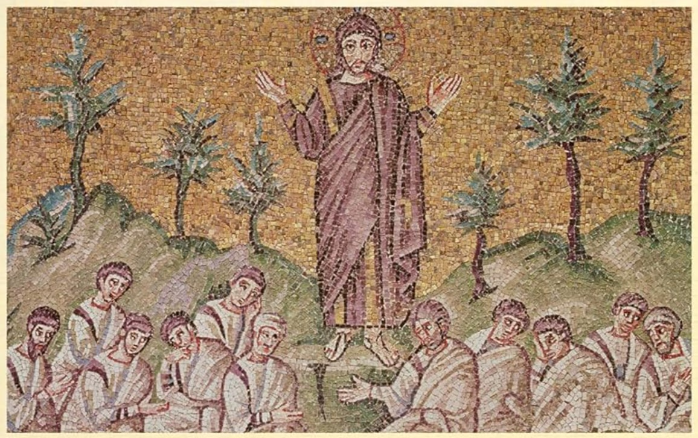

The Sermon on the Mount and Human Flourishing (Book Review)
September 6, 2023

The Sermon on the Mount in Matthew 5–7 is the very first of Jesus’s teachings in the New Testament and widely considered his most important discourse. It has captivated the minds of theological scholars in every century of the church. The ideas from the Sermon have even made its way into secular thought—such is its influence. It is worth the careful study of every Christian. Jonathan Pennington’s
The Sermon on the Mount and Human Flourishing aims to cast a fresh, new light on the interpretation of the Sermon.
Across two millennia, the Sermon on the Mount is the most famous and most analyzed literary work in all of Western civilization. Therefore, it has produced a multitude of different interpretations that need to be carefully understood. Each has its strengths and weaknesses, but which one brings out the true intent of Matthew and Jesus himself? Pennington lays out a brief history of interpretation, and I summarize here five strands of interpretation that seemed especially relevant:
“Impossible Ideal” view (Luther)
Luther, one of the founders of the Reformation, was deeply influenced by Paul’s work, and he interpreted the Sermon by casting it into Paul’s law/grace paradigm. He saw the Sermon as Jesus raising the bar, creating impossible demands that nobody could fulfill. “Love your enemies,” “Be perfect, therefore, as your heavenly Father is perfect,” etc. His view, which is common in today’s church, was that these impossible demands were meant to quickly expose our need for the gospel and cast us upon God’s grace.
New covenant view (Calvin)
Calvin, another founder of the Reformation, viewed the Sermon as Jesus rescuing God’s law from the hypocrisy and misinterpretation of the Pharisees. The Sermon on the Mount becomes a new parallel of Moses receiving the law of Mt. Sinai, and it is the summary of the law of Christ that defines the new covenant relationship between God and his Church. Unlike Luther, Calvin sees this law as something that
can generally be fulfilled with the empowering of the Holy Spirit.
Virtue formation (Aquinas, Catholicism)
The Sermon functions as a system of ethics intended to build the virtues of the Christian. This is the common view of Roman Catholics, whose view of progressive salvation through sacraments and works joined in faith lends itself to a reading of Scripture that is more focused on virtue formation and building a system of morality.
“Existential” reading
Rather than functioning as a law that needs to be obeyed through actions, the Sermon speaks to attitudes and internal dispositions, the fruit of which are righteous actions. The Sermon ultimately tells us who we ought to
be, not primarily what we ought to
do.
“Kingdom of heaven on earth” reading
The Sermon
itself is the gospel of Jesus Christ, and it is a vision of a better human and a better society that Christians should seek to achieve. In a sense, this is a literal application of “Thy kingdom come, thy will be done on earth as it is in heaven.” This is a common reading of the progressive/modernist movement in Christianity during the early 20th century, which gave birth to the “social gospel” movement. Though this reading is generally absent from modern evangelical circles, it is the foundation of many Christian pacifism and social welfare movements.
As one can see, our contemporary understanding typically combines a little bit from each of these interpretations, which each have their own strengths that need to be acknowledged. However, this has left us with a hodge-podge of different lenses that make the Sermon appear hazy and confusing. Could there be a common strand of interpretation that ties the whole Sermon together? Was there an intended way to interpret this Sermon? Pennington says yes, and he introduces a substantively new reading of the Sermon in his book.
A key step that lays the foundation for Pennington’s thesis is trying to understand the contextual basis for Matthew’s gospel and the cultural milieu of its intended audience.
Pennington identifies two unique but interwoven influences on Matthew’s gospel: Judaism and Greco-Roman virtue tradition. After the completion of the Old Testament canon, Judaism became deeply Hellenized. The Old Testament itself was translated into Greek, and most Jews spoke Greek. It would only be natural for the Sermon to be interpreted in light of both these traditions. Pennington argues that the correct interpretation of the Sermon lies at the nexus of the two foundational questions of both traditions. For Jews, the fundamental question was: what is going to be the ultimate fulfillment of the Old Testament promises? What is God’s plan of redemptive restoration, so that his people can once again experience true rest, or
shalom, and a pre-fall Edenic flourishing? On the other hand, the fundamental question that tied together all Greek philosophers—Aristotle, Epicurus, Stoics, etc.—was: what is it that makes humans truly
happy, not as a subjective temporary mental state, but as an overall life that is satisfying and meaningful to the soul?
In a sense, Pennington believes that the Sermon builds off of the distant influence of Aristotle’s work. Aristotle’s philosophy was that the way to experience true happiness or true human flourishing was by becoming a virtuous person in one’s own essence. Pennington believes that the Sermon exists in a similar vein, combining Aristotle’s
eudaimonia with the OT expectation of
shalom. He argues, as his thesis, that
the Sermon is a vision for human virtue that looks forward to God’s coming restorative kingdom, establishing a radically new virtue ethic that finally answers how humans can experience true satisfaction and true flourishing in their covenant relationship with God as they await his kingdom. Pennington identifies the Sermon as “flourishing-oriented, kingdom-awaiting, eschatological wisdom exhortation” (15), at once establishing Jesus as the true teacher and prophet of the Jewish tradition, and also the true philosopher-king of the Greco-Roman tradition.
At the same time, Pennington does not stray from Paul’s theology, and he makes the effort to show how this interpretation of the Sermon aligns with Paul’s gospel. He identifies with Paul, writing that true human flourishing is only
available through communion with God through Christ empowered by the Holy Spirit. But he observes that the message of the Sermon is that true human flourishing is only
experienced through whole-person discipleship, following Jesus’s teachings and life (14).
Pennington’s justification for reading the Sermon in this way rests primarily on his understanding of two key words:
makarios (Matt. 5:3–11; typically translated as “blessed”) and
teleios (5:48; typically translated as “perfect”). He argues that “blessed” and “perfect” are unhelpful translations, given the way that we normally use those words. Instead, he argues that
makarios should be understood in the sense of happiness and human flourishing, and
teleios should be understood in the sense of “wholeness,” “completeness,” or “singular devotion” (80). For Pennington, these two words form “a track of two conceptual rails” upon which the Sermon rides (41). The Sermon is an invitation to a life of
makarios-ness—true human flourishing in covenant relationship with God. But this can only be achieved through
teleios-ness, which involves being
whole in aligning one’s inward and outward righteousness (5:21–48; 6:1–21) and being
singular and
undivided in one’s devotion to God (6:19–34).
There is much that has not been said in this summary of Pennington’s important work. Overall, Pennington has given us a rich new framework for understanding the Sermon on the Mount. We sometimes fail to understand that discipleship and happiness are not mutually exclusive, but rather that discipleship is the
pathway towards human flourishing.
One weakness of this book is probably Pennington’s view of the relationship between the Sermon on the Mount and Greek philosophy. Although many Greek philosophers, including Aristotle, had important ideas relating to human flourishing, a connection to the Sermon on the Mount seems tenuous. The Old Testament is full of this human-flourishing-ethic, and an appeal to Greek philosophy is probably unnecessary.
Finally, Pennington also provides many insights that help the reader better understand the sometimes confusing relationship between the theology of the Gospels and the theology of Paul. How does the Gospels’ emphasis on righteousness and rewards relate to Paul’s emphasis on faith and grace? In chapter 12, Pennington shows that Matthew and Paul, while having different emphases in their theology, mutually reinforce one another. Matthew makes it clear that this righteous, flourishing life of discipleship is only made possible by the grace that is poured out by a dying Savior. At the same time, Paul makes it clear that God’s gift of salvation through faith in Christ can never be separated from a flourishing, transformed life of conformity to Christ.
This book is an excellent starting point for anybody who wants to dive deep into the interpretation of the Sermon on the Mount. Pennington's approach to the Sermon is rich and refreshing, not only interpretively but also spiritually. It is, however, targeted for academics and probably not suitable for laypeople.
Purchase on
Amazon
Pennington, Jonathan T.
The Sermon on the Mount and Human Flourishing: A Theological Commentary. Grand Rapids: Baker Academic, 2018.